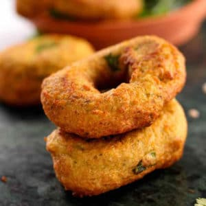

ULUNDU VADAI (MEDU VADA)
Recipe
|
 |
01.jpg) |
.jpg) |
Ingredients:
- 1 cup whole Urad dal (black gram)
- 1 small onion, finely chopped
- 2 green chilies, finely chopped
- 1/4 cup chopped curry leaves
- 1/4 cup chopped coriander leaves
- 1 teaspoon ginger, grated
- Salt to taste
- Oil for deep frying
Instructions:
- Soaking Urad Dal:
Rinse the urad dal thoroughly and soak it in water for 2-3 hours. Drain the water completely.
- Grinding:
Grind the soaked urad dal into a smooth and thick batter using very little water. The batter should be fluffy and light.
- Mixing:
Transfer the batter into a mixing bowl. Add finely chopped onions, green chilies, curry leaves, coriander leaves, grated ginger, and salt. Mix well to combine.
- Shaping Vadai:
Heat oil in a pan for deep frying. Wet your hands and take a small amount of batter. Shape it into a flat round or doughnut shape with a hole in the center.
- Frying:
Gently slide the shaped vadai into the hot oil. Fry until they turn golden brown and crispy on both sides. Ensure the vadai is cooked evenly.
- Draining Excess Oil:
Remove the vadai from the oil and place them on paper towels to drain excess oil.
- Serve:
Ulundu vadai is ready to be served. Enjoy it with coconut chutney or mint chutney.
Note:
- Ensure the oil is hot enough for frying to get crispy vadai.
- Adjust the quantity of green chilies according to your spice preference.
- You can also add a handful of soaked and chopped dhalia (pottukadalai) for added crunch.